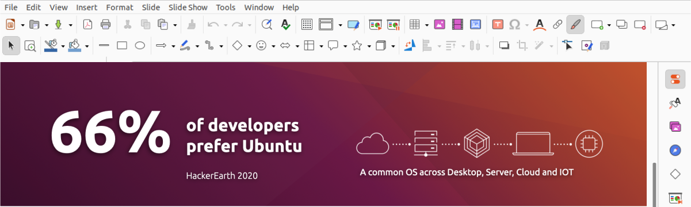

|
Geef uw productiviteit een boost |
Budgie Desktop bevat LibreOffice, een reeks Microsoft Office-compatibele open source-applicaties voor documenten, spreadsheets en presentaties. Populaire samenwerkingstools zijn ook beschikbaar. Thunderbird LibreOffice Microsoft Teams Slack |
||